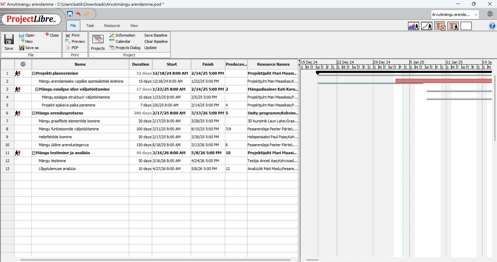

Projekti „Arvutimängu arendamine“ tegin valmis kasutades Project Libre programmi. See projekt sai loodud Project Libre programmi kasutamaõppimise eesmärgil. Enda väljamõeldud projektis kasutasin erinevaid ressursse ja panin kirja erinevad tööülesandeid vastavalt ajakavale ning jaotasin tegevused erinevate inimeste vahel. Peamised kasutatud ressursid olid meeskonnaliikmed: projektijuht Mari Maasikas, peaarendaja Peeter Pärtel, analüütik Mati Madu, arendaja Teele Talv, mängudisainer Kati Karu, 3D-kunstnik Lauri Lahe, graafiline disainer Kalle Keerd, helispetsialist Paul Paas ja testija Anneli Aas. Ressursside alla kuuluvad ka kohvimasin, kohvioad, piim ja Unity programm.Tööülesannete alla kuulusid mänguidee väljatöötamine, ülesannete jaotamine meeskonnas, mängu prototüübi ja struktuuri loomine, arendusetapid ning lõpptulemuse analüüs. Projekt oli plaanitud algama detsembris 2024. aastal ja lõppema mais 2026. aastal, võttes seega aega keskmiselt 1,5 aastat.Allpool on näha tehtud projekti pilt, selle raportid ja allalaetav projektifail.
